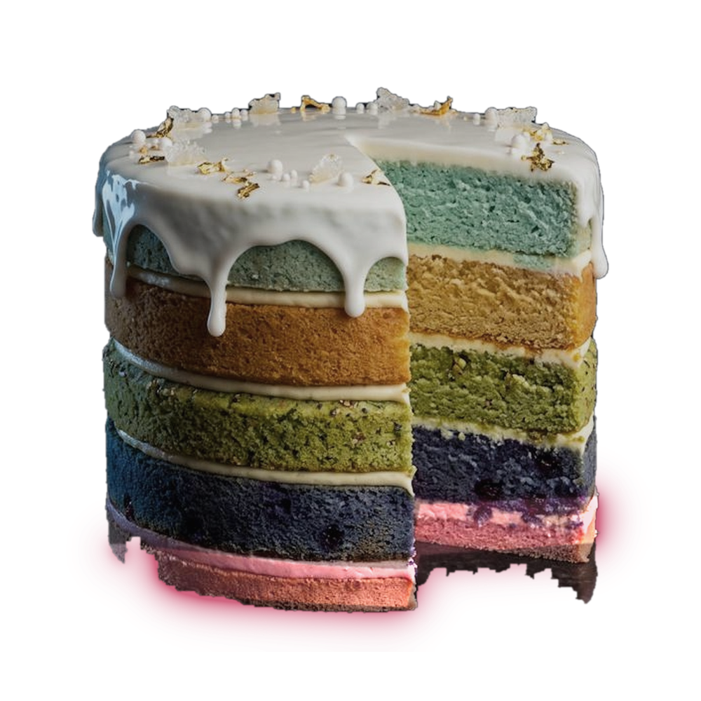

The thin layer at the bottom
Menopause therapy is a layer, not icing.
Under 60, or within ten years of menopause: the benefits outweigh the risks
The Menopause Society, 2022. The FDA removed the black-box warnings in 2025
One action: find a clinician with the letters MSCP.
08 / 21
The Menopause Society, 2022. U.S. FDA, November 2025
